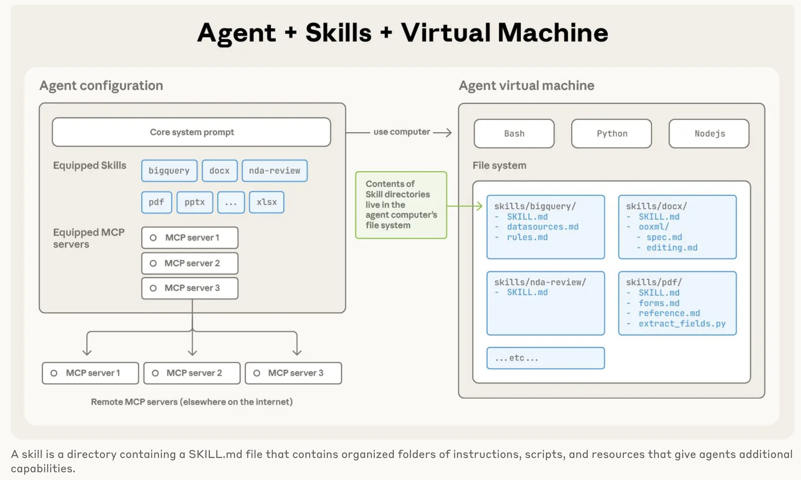
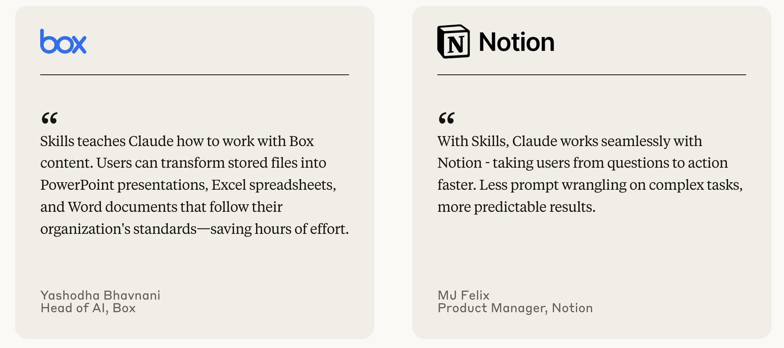

Claude Skills and Custom Functions

A few weeks ago, I had written about the need for Agent Builder platforms to allow builders to execute custom functions. The reason was pretty simple, while the LLMs are like an extremely versatile Swiss army knife that can do many different things, they are often not the right tool for the job. That being said, because they are so accessible, as an agent builder we end up using them to do inefficient and expensive things.
Here are some examples I had shared, of things that an LLM can do but using custom python code might be faster and cheaper -
Working with agent builder platforms that have allowed me to execute my own custom functions via Serverless functions or other means have been a game changer. I've dropped the cost of agent execution and shaved off minutes from my agent execution time.
Last week, Anthropic released a beta feature called Claude Skills. When I first heard about it, I did not dig deep into it as I assume I knew what this functionality would do. Basically more structured context engineering. You define skills in structured way and Anthropic would add it to the prompt and allow you to use different skills for different tasks. Today I use custom instructions in a Claude Project and I have different folders for different custom instructions. Skills tackles that need, which I thought was pretty cool but I wasn't too excited about it. It seemed like an incremental innovation.
Over the weekend I finally got to dig deeper into Skills and then I realized that Anthropic was basically allowing me to execute custom code as part of my prompts. They would spin up a VM (Virtual Machine) for my chat session and load any custom code I define in my skill and run that in the VM. So if I want to parse and excel file and extract all email addresses, I could write python code and load it as a skill and Anthropic would execute that deterministically, thus giving me much more control on how I worked with excel files. It gives me repeatability and consistency of execution.

I am constantly blown away by Anthropic's innovations - MCP, Claude Code and now Skills are each a new way of doing things in this world of agentic AI and they are just so simple and intuitive.
So we will go from a marketplace of MCP servers to a marketplace of Skills. You want to fill out a PDF there will be a skill for that, you want to create a PPT with your design and branding there will be a skill for that. I am very curious to see where this all ends up.

I am also curious how this pattern will be implemented in Agent Building tools. The big difference seems to be that in the case of Anthropic, Claude is the agent orchestration layer. It figures out autonomously what MCP server to connect to, what Skills to load and it executes the work. In the case of Agent Builders, you define the workflow and the agent platforms conduct the orchestration. They have their own integrations (in lieu of MCP) and they have the ability to run Serverless functions in lieu of Skills, but it is fascinating to see how quickly the LLM vendors are adding functionality to close the gaps (and redefine how Agentic AI works).
Where This Gets Really Interesting
As I've been thinking through the implications of Skills, a few questions keep coming up that I don't have answers to yet.
The Agent Stack Question
I've been building agents in both paradigms now - the explicit workflow design of agent builders and the autonomous orchestration of Claude. For deterministic, business-critical workflows (like the examples I shared earlier - standardizing formats, schema transformations), which approach do I actually want?
Option A: Explicit control in Agent Building tools where I design every step of the flow
Option B: Claude autonomously figuring it out via Skills
My gut tells me the answer is both. Use agent builders for the workflow skeleton - the high-level business process that needs to be predictable and auditable. But have a "Claude with Skills" node for the messy, ambiguous parts where the edge cases are too numerous to pre-program. Wonder how Agent Builder platforms will expose Claude Skills.
The Debuggability Challenge
Here's what worries me about Skills: when Claude autonomously decides to use a skill, reads some files, executes some code, and uses the output in its reasoning... and something goes wrong, how do I debug that?
In my agent builder workflows, I can trace the exact flow. I can see which node failed, what the inputs were, what the outputs should have been. With Skills, Claude is the black box orchestrator making decisions I don't directly control.
I haven't figured out yet how to maintain observability when moving logic into Skills. This feels like a real gap for production use cases.
The Cost Equation
I mentioned earlier how custom functions dropped my costs and execution time. But with Skills, the math changes.
With Skills, I'm billed per session-hour. The Skills themselves execute deterministic code (cheap and fast), but Claude still needs to reason about when to use them (expensive tokens).
So the cost model becomes: Container time + LLM reasoning tokens
In my agent builders it's: Serverless execution + LLM generation tokens
I'm genuinely curious whether Skills actually save money or just shift where the cost shows up.
The big caveat with Skills (and this is also the case with MCP) is privacy and security. If you are using 3rd party Skills, you are giving that 3rd party the ability to run code and this opens up vulnerabilities.
The Skills marketplace will need:
Has anyone used or built any Skills?